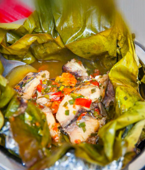
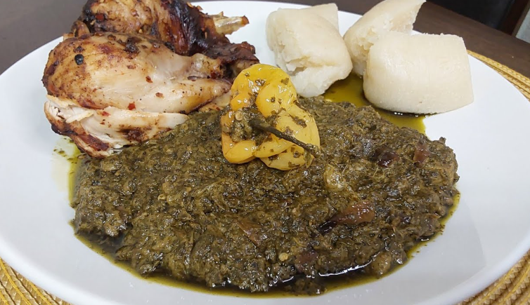
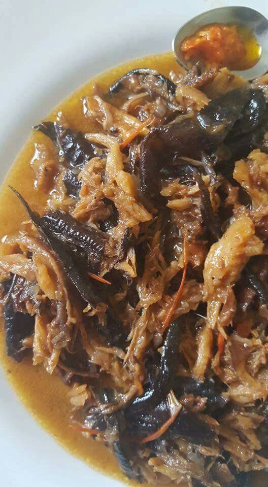
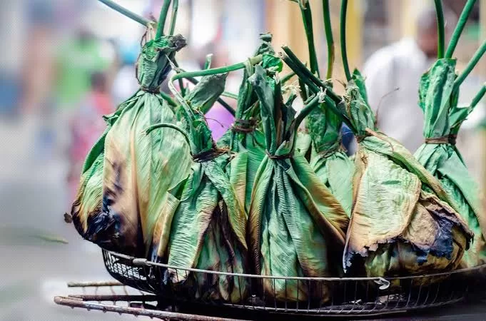
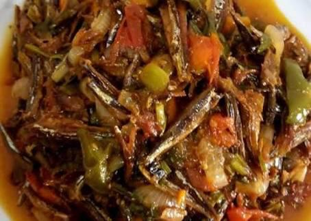

La population du Congo est estimée à environ 4,04 millions d’habitants. Plus de la moitié vit dans les villes de Brazzaville et Pointe-Noire, conséquence de l’exode rural entamé au 20ème siècle. Le pays est ainsi l’un des plus urbanisés d’Afrique.
Les Congolais sont en grande partie Bantous, issus de migrations depuis le Nigeria et le Cameroun vers l’Afrique australe il y a près de 2000 ans.
Le français est la langue officielle du Congo. Cependant, le lingala et le munukutuba sont aussi largement utilisés comme langues nationales.
| Lingala | Munukutuba | Français |
|---|---|---|
| Mbote | Mbote | Bonjour |
| Bolingo | Louzolo | Amour |
| Nalingi yo | Munu zola nge | Je t’aime |
| Tosala | Betu sala | Travaillons |
Le christianisme est dominant, avec environ 50% de catholiques et 40% de protestants. Les religions traditionnelles restent présentes (2,2% de la population), basées sur le culte des ancêtres et des esprits.
L’islam est pratiqué par environ 1,3% de la population, principalement des descendants d’immigrés ouest-africains, et des mosquées sont visibles dans les grandes villes.
De nombreux prédicateurs charismatiques congolais et internationaux influencent la vie spirituelle, notamment à travers la musique religieuse (lingala, munukutuba, français), qui est devenue une véritable richesse culturelle nationale.
La cuisine congolaise est variée et raffinée, combinant légumes frais, viandes, volailles, poissons et fruits de mer. Elle est réputée saine et nutritive.

Ragoût de poisson cuit dans des feuilles, accompagné de fufu ou de kwanga.

Plat national à base de feuilles de manioc, huile de palme, poisson fumé et arachides.

Poulet rôti mijoté dans une sauce épaisse à base de noix de palme.

Bouillon de poissons cuisiné avec du jus de coco et de la pâte d’arachide.

Viande marinée et cuite à l’étouffée dans des feuilles de bananier.

Petits poissons séchés et frits, servis avec du manioc ou des bananes plantains.
Les Nganda, restaurants typiques, sont des lieux de rencontre sociale
où se mêlent toutes les classes, discutant de politique, culture et affaires
autour de plats traditionnels.